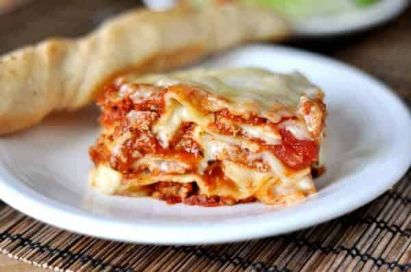

This lasagna recipe takes a little work, but it is so satisfying and filling that it's worth it!
Prep Time: 30 mins
Cook Time: 2 hrs 30 mins
Additional Time: 15 mins
Total Time: 3 hrs 15 mins
Servings: 12
Ingredients
- Meat: This super meaty lasagna has sweet Italian sausage and lean ground beef.
- Onion and garlic: An onion and two cloves of garlic are cooked with the meat to add tons of flavor.
- Tomato products:Tomato products: You'll need a can of crushed tomatoes, two cans of tomato sauce, and two cans of tomato paste.
- Sugar: Two tablespoons of white sugar add subtle sweetness and enhance the flavor of the sauce.
- Spices and seasonings: This lasagna recipe is flavored with fresh parsley, dried basil leaves, salt, Italian seasoning, fennel seeds, and black pepper.
- Lasagna noodles: Use store-bought or homemade lasagna noodles.
- Cheeses: Parmesan, mozzarella, and ricotta cheese make this lasagna extra decadent.
- Egg: An egg helps bind the ricotta so it doesn't ooze out of the lasagna when you cut into it.
Directions
Overview
- Make the meat sauce
- Cook noodles/Make the noodles
- Make the ricotta mixture
- Layer the lasagna according the directions below
- Cover with foil and bake per recipe directions
- Let lasagna rest before serving to allow it to bind together
How to layer the Lasagna
List is from bottom to top
- Meat
- Noodles
- Ricotta Cheese
- Mozzarella Slices
- Meat Sauce
- Parmesan Cheese
- Repeat Layers, then top with remaining parmesan and mozzarella
Baking Instructions
The assembled lasagna should take about 50 minutes to cook in an oven preheated to 375 degrees F.
Cover it with foil for the first 25 minutes, then let it cook uncovered for the final 25 minutes.
Also, it's important to let the lasagna rest at room temperature for about 15 minutes before you cut into it.